Perspectivas sobre o reconhecimento de padrões de modularidade e suas implicações para a evolução de morfologias complexas

Modularidade

Sistemas Morfológicos

Campos Morfogenéticos

Interações Ontogenéticas


Interações Funcionais
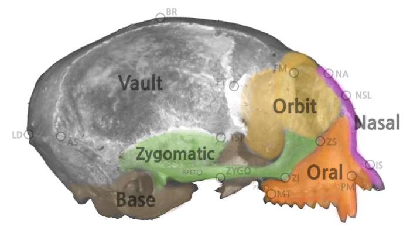
Matrizes de Covariância
\[ \begin{bmatrix} \sigma_{1}^2 & cov_{1,2} & cov_{1,3} & \cdots \\ cov_{2,1} & \sigma_{2}^2 & cov_{2,3} & \cdots \\ cov_{3,1} & cov_{1,2} & \sigma_{3}^2 & \cdots \\ \vdots & \vdots & \vdots & \ddots \\ \end{bmatrix} \]
Matrizes de Correlação
\[ \begin{bmatrix} 1 & \rho_{1,2} & \rho_{1,3} & \cdots \\ \rho_{2,1} & 1 & \rho_{2,3} & \cdots \\ \rho_{3,1} & \rho_{1,2} & 1 & \cdots \\ \vdots & \vdots & \vdots & \ddots \\ \end{bmatrix} \]
Resposta a Seleção
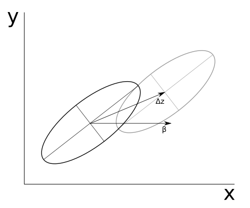
\[ \Delta \bar{z} = \mathbf{G} \beta \]
Como representar elementos morfológicos?
Distâncias Euclidianas
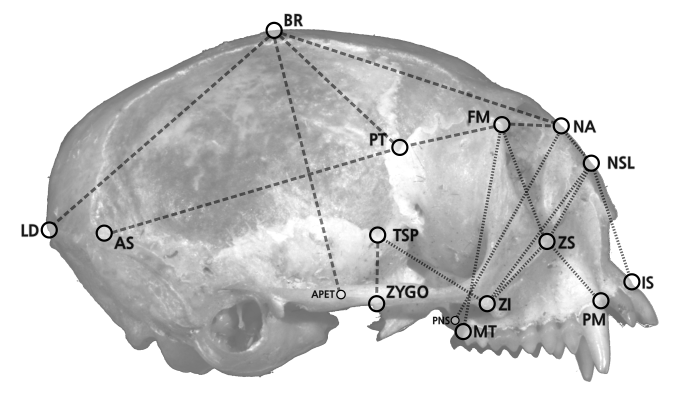
Landmarks
Algoritmos de Procrustes
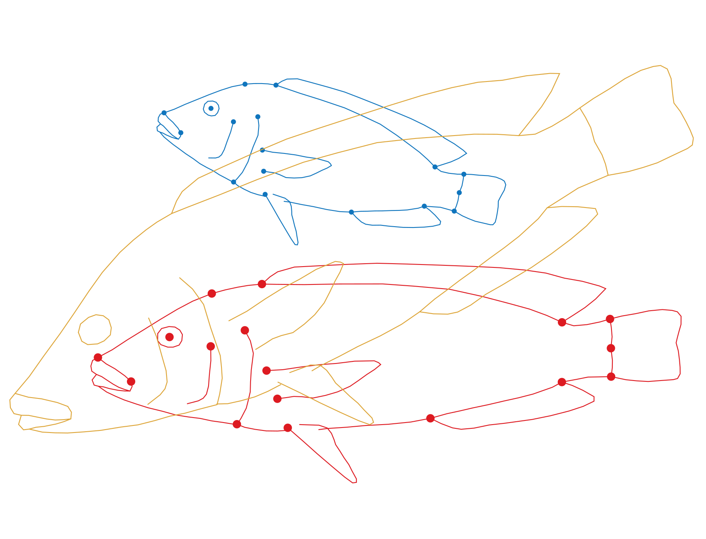
Escalonamento
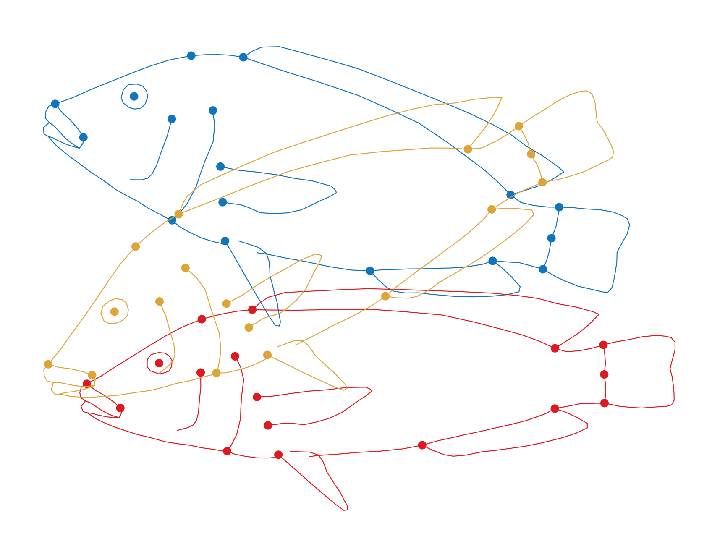
Translação
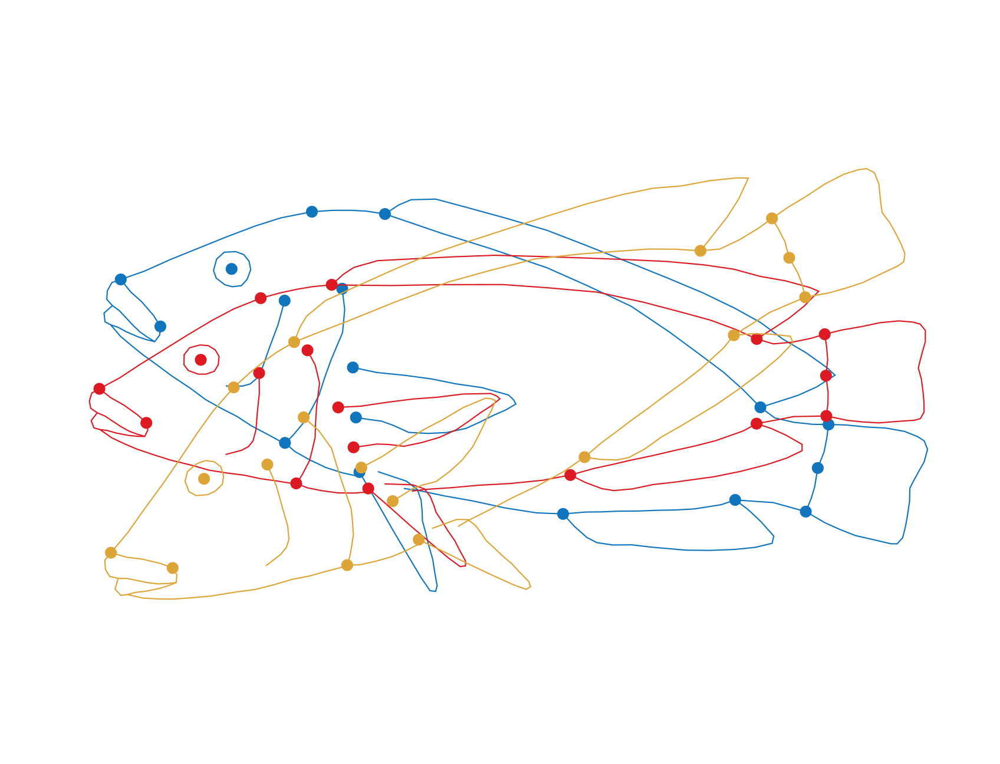
Rotação
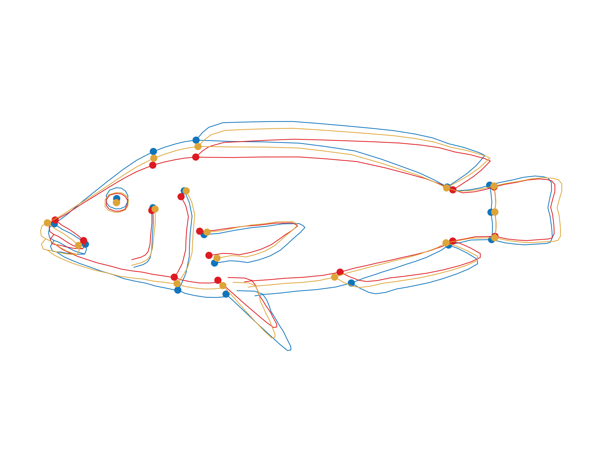
Problemas
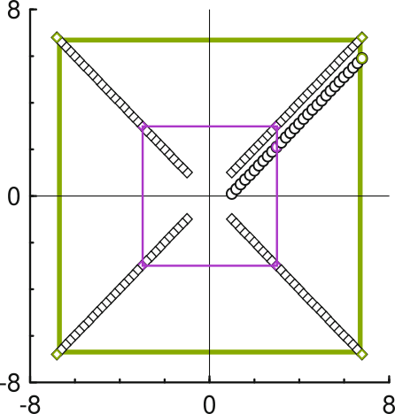
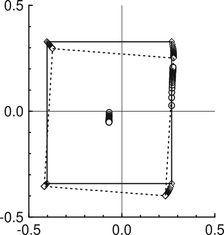
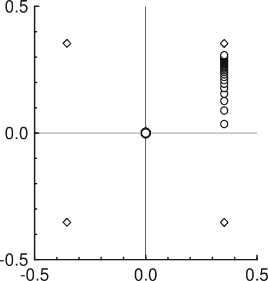
Deformações
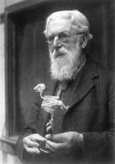
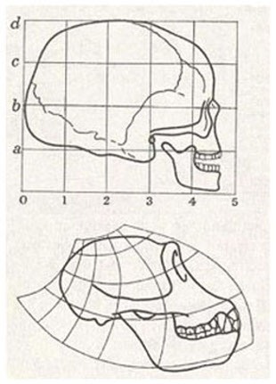
Deformações
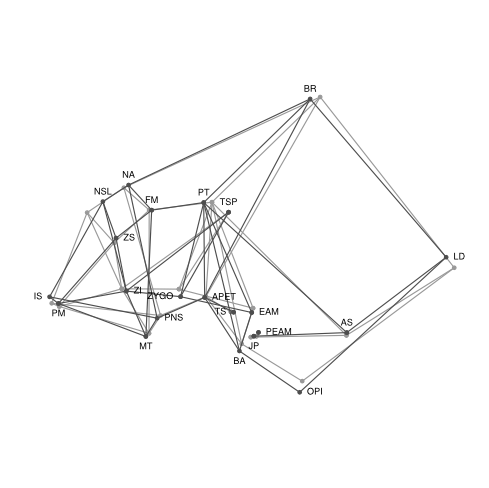
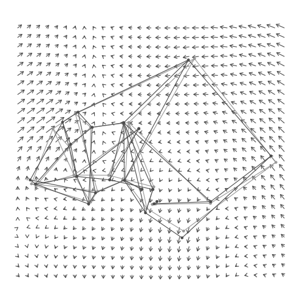
Variáveis Locais de Forma
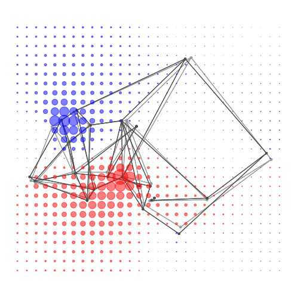
Objetivo
Investigar a relação entre as representações utilizadas para caracterizar variação morfológica e as inferências feitas a partir destas representações a respeito de propriedades variacionais em escala macroevolutiva.
Anthropoidea
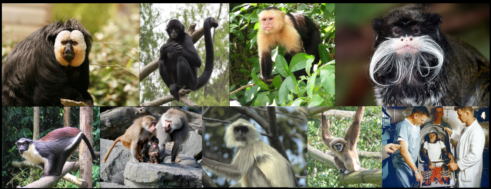
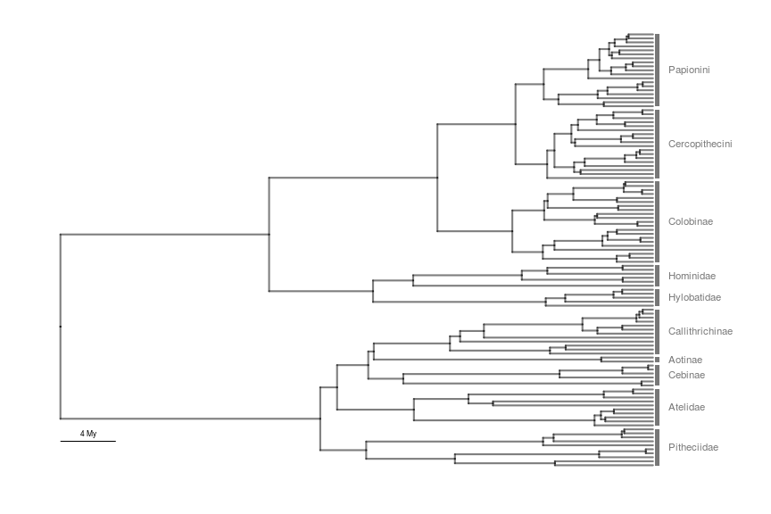
Perfil da Tese
Taxas de erro em testes de hipótese a priori
Alometria e modularidade
Análise comparativa de matrizes de covariância
Alometria
Perguntas
Os parâmetros de alometria estática no crânio mudaram ao longo da diversificação dos Anthropoidea?
Existe relação entre estes parâmetros (em especial, \(b_s\)) e a magnitude de associação entre caracteres nas diferentes regiões do crânio?
Métodos
Modularidade
matrizes de correlação entre distâncias interlandmark
Índice de Modularidade:
\[ MHI = \frac{\bar{\rho}_+ - \bar{\rho}_-}{ICV} \]
Alometria
Regressão de projeções no Componente Alométrico Comum sobre o logCS
- projeções estimadas a partir de variáveis locais de forma
Regressão aleatória:
- parâmetros da regressão dentro de cada espécie (\(a_s\); \(b_s\)) seguem uma distribuição multivariada normal dependente da filogenia.
Os parâmetros de alometria estática no crânio mudaram ao longo da diversificação dos Anthropoidea?
- estimativas de intervalos de credibilidade para os parâmetros da alometria estática (\(a_s\) e \(b_s\)) ao longo da filogenia
Existe relação entre estes parâmetros (em especial, \(b_s\)) e a magnitude de associação entre caracteres nas diferentes regiões do crânio?
- regressão filogenética dos Índices de Modularidade sobre parâmetros alométricos
- seleção de modelos
Resultados
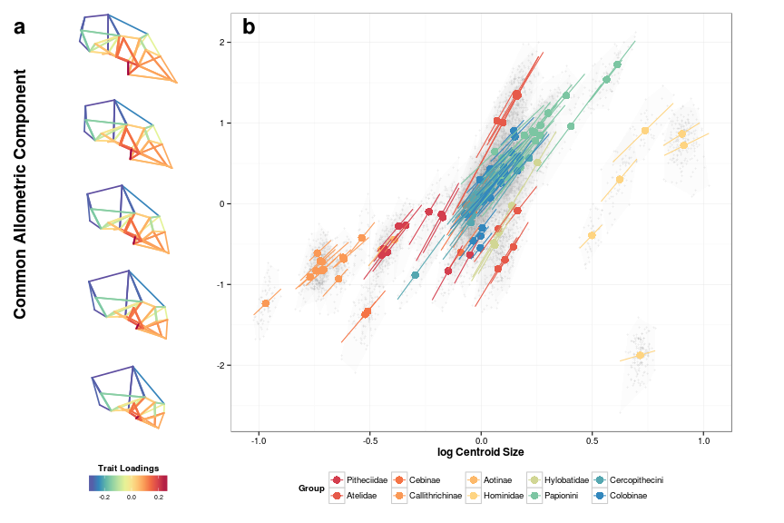
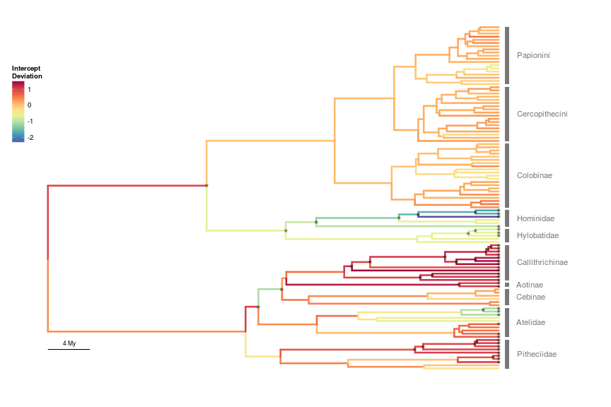
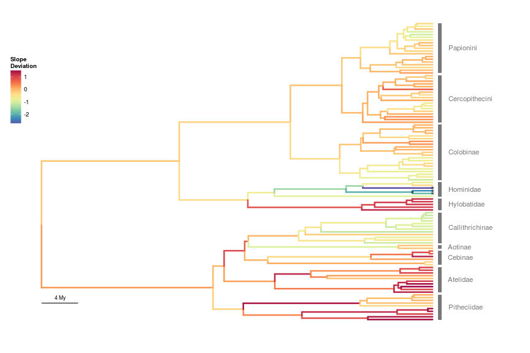
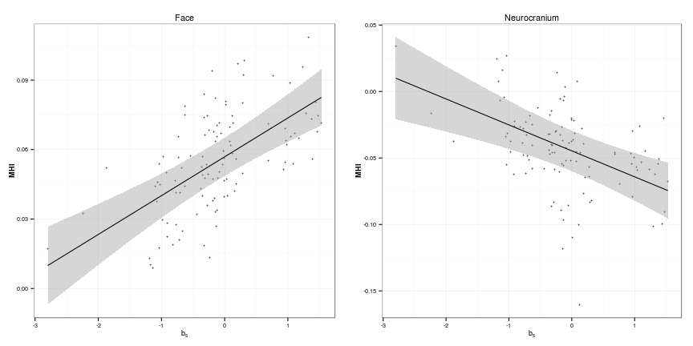
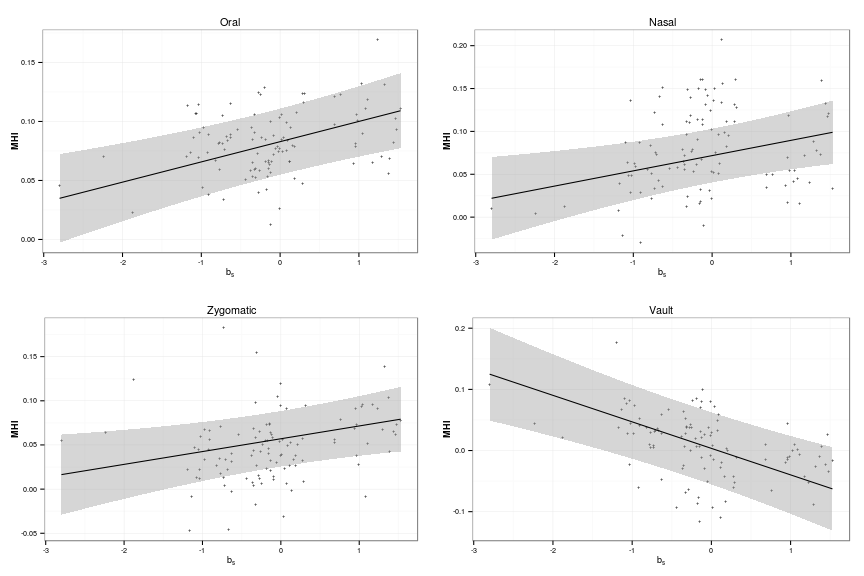
Respostas
Os parâmetros de alometria estática no crânio mudaram ao longo da diversificação dos Anthropoidea?
Sim! Interceptos mudaram mais que inclinações.
Mudanças detectáveis nas inclinações em Homo e Gorilla.
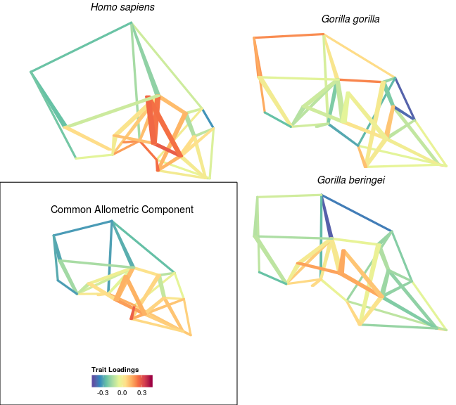
Existe relação entre estes parâmetros (em especial, \(b_s\)) e a magnitude de associação entre caracteres nas diferentes regiões do crânio?
- Sim, com relações opostas para caracteres da Face (+) e do Neurocrânio (-).